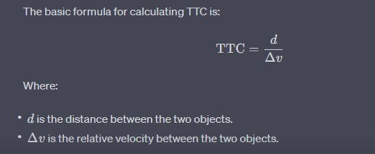
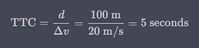
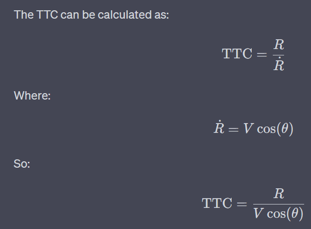

AEB Theory of Operation¶
1️⃣ Learning Goals¶
Using the
LaserScanmessage in ROS 2Time to Collision (TTC)
Safety critical systems
2️⃣ Overview¶
The goal of this lab is to develop a safety node for the race cars that will stop the car from collision when travelling at higher velocities. We will implement Time to Collision (TTC) using the LaserScan message in the simulator.
For different commonly used ROS 2 messages you can use ros2 interface show <msg_name> to see the definition of messages. Note for messages that are not installed by default by the distro, you’ll have to first install it for this to work.
The LaserScan Message¶
The LaserScan message contains several fields that will be useful to us. You can see detailed descriptions of what each field contains in the API. The one we’ll be using the most is the ranges field. This is an array that contains all range measurements from the LiDAR radially ordered. You’ll need to subscribe to the /scan topic and calculate TTC with the LaserScan messages.
The Odometry Message¶
Both the simulator node and the car itself publish Odometry messages. Within its several fields, the message includes the cars position, orientation, and velocity. You’ll need to explore this message type in this lab.
The AckermannDriveStamped Message¶
You’ve already used AckermannDriveStamped in the previous lab. It will be the message type that we’ll use throughout the course to send driving commands to the simulator and the car. In the simulator, you can stop the car by sending an AckermannDriveStamped message with the speed field set to 0.0.
3️⃣ Time-to-Collision (TTC) vs. Distance-Based Braking¶
When designing an autonomous braking system, you have two main approaches:
Braking based on Distance to Object
Braking based on Time-to-Collision (TTC)
Both methods aim to prevent collisions, but TTC is usually the superior choice. Let’s break it down.
Distance-Based Braking (Threshold Approach)¶
This method triggers braking when an obstacle is closer than a set distance.
How It Works
If an object is detected closer than X meters, apply brakes
If the object is beyond X meters, continue driving
Why This Can Be a Problem
❌ Speed Ignorance:
A slow-moving car at 2 m/s needs far less stopping distance than a car at 10 m/s
A fixed threshold (e.g., “brake if object < 2m”) doesn’t scale with speed
❌ Late Reactions at High Speed:
If a vehicle is moving fast, it may not have enough distance left to safely stop when the threshold is reached
❌ Unnecessary Braking at Low Speed:
If a vehicle is moving very slowly, braking at the same fixed distance may be overly cautious, leading to unnecessary stops
Time-to-Collision (TTC) - A Smarter Alternative¶
TTC predicts how long until a collision happens if both objects maintain their current speeds.
How It Works
The Time-to-Collision (TTC) is calculated as:


If TTC drops below a safe threshold (e.g., 0.5s), apply brakes
If TTC is above a release threshold (e.g., 1.5s), allow normal driving
Why TTC is Better
✅ Speed Awareness:
A vehicle at 2 m/s and a vehicle at 10 m/s will have different stopping distances, and TTC adapts braking accordingly
✅ Smooth & Early Braking:
If an object is far but closing quickly, TTC detects the risk earlier than distance-based braking
✅ No Unnecessary Stops:
If an object is close but not a threat (e.g., a parked car not moving into the path), TTC won’t trigger braking unnecessarily
Example: Comparing Both Approaches¶
Imagine a car moving at 10 m/s with an object 5 meters ahead.
Method |
Stopping Decision |
|---|---|
Distance-based braking (Threshold = 3m) |
🚗💥 Car doesn’t brake until too late, leading to collision |
TTC-based braking (Threshold = 0.5s) |
🚗🛑 Car detects high closing speed and brakes early to avoid impact |
Now, imagine the same scenario at 2 m/s:
Method |
Stopping Decision |
|---|---|
Distance-based braking (Threshold = 3m) |
🚗🛑 Unnecessary stop, because 3m is plenty of room at low speed |
TTC-based braking (Threshold = 0.5s) |
🚗✅ Car recognizes the slow approach and continues safely |
Key Takeaways¶
Distance-based braking ignores speed , which can cause late stops at high speeds or unnecessary stops at low speeds
TTC accounts for speed & closing rate , making braking decisions more adaptive
TTC allows smoother driving because it avoids the jerky “brake-go-brake” behavior of fixed-distance thresholds
Note
If you’re designing an autonomous emergency braking system, TTC is the way to go! 🚀
4️⃣ Understanding Time to Collision (TTC)¶
Time to Collision (TTC) answers a very practical question:
> If nothing changes, how long until we hit something?
In Automatic Emergency Braking (AEB), TTC is used to decide when braking must begin to avoid or reduce a collision.
Rather than predicting the future perfectly, TTC assumes: - Constant speed - Straight-line motion
That assumption is intentional—it allows the system to react quickly and conservatively.
—
Basic TTC Concept¶
At its core, TTC is calculated as:
Where: - Distance is how far away the obstacle is right now - Relative Velocity (Δv) is how quickly that distance is shrinking
In practice: - If the distance is getting smaller → TTC decreases - If TTC reaches a critical threshold → brake
—
Example: Why TTC Matters¶
Consider this real-world scenario:
Your vehicle is moving at 20 m/s
An obstacle is 100 meters ahead
The obstacle is stationary


This produces a TTC of 5 seconds.
From an AEB standpoint, this means: - At 5 s → no action - At 2 s → warning - At 1 s → automatic braking
The exact thresholds vary by system, but the decision logic is the same.
Note
TTC does not try to model driver intent or future steering—it exists to answer “Do we need to act now?”
—
5️⃣ Time to Collision Using Laser Scan Data¶
When working with LiDAR, we don’t evaluate just one distance. Instead, we evaluate many possible collision paths at once, one for each scan beam.
Each beam answers the question:
> If the vehicle continues moving forward, how soon would I collide with an object along this direction?
TTC is computed per beam, and the most dangerous (smallest) TTC drives the braking decision.
—
What Data the Vehicle Uses¶
For each LiDAR scan beam, the system knows:
R – Distance to the obstacle (from
LaserScan.ranges[])θ – Angle of the beam relative to the vehicle’s forward direction
vₓ – Vehicle forward velocity (from
Odometry)
The key problem to solve is:
> How fast is the distance along this beam shrinking?
—
Range Rate: Closing Speed Along a Beam¶
Only the forward component of the vehicle’s velocity reduces the distance to an obstacle.
That component is called the range rate.


Obstacles straight ahead → large closing speed
Obstacles off to the side → small or zero closing speed
Obstacles behind → ignored
This naturally filters out objects that do not pose an immediate collision risk.
—
Calculating Range Rate (Recommended Method)¶
For AEB, range rate is best computed using velocity projection:
ṙ = − vₓ · cos(θᵢ)
Where: - vₓ is the vehicle’s forward speed - θᵢ is the LiDAR beam angle
Why this works well: - Stable - Independent of LiDAR noise - Matches real automotive AEB behavior
A negative ṙ means the vehicle is approaching the obstacle.
—
Computing TTC Per Beam¶
Once range rate is known, TTC is computed as:
TTC = R / (−ṙ)
With two important rules:
If −ṙ ≤ 0, the vehicle is not approaching → ignore
If R is invalid (
infornan) → ignore
This ensures TTC is only calculated when a collision is physically possible.
—
Why the Sign Matters¶
Approaching obstacle → ṙ < 0 → TTC is positive
Moving away or parallel → ṙ ≥ 0 → TTC is ignored
This prevents false braking from: - Side walls - Objects behind the vehicle - Sensor noise
—
Using TTC for AEB Decisions¶
After TTC is computed for all beams:
Discard invalid TTC values
Find the minimum TTC
Compare it to system thresholds: - Warning threshold - Braking threshold
If the minimum TTC drops below the braking threshold, the vehicle must brake immediately.
This method allows the system to respond to: - Narrow obstacles - Partial overlaps - Objects not centered in front of the vehicle
Note
Always guard against inf and nan values when working with LiDAR data. These commonly occur when:
- No object is detected within sensor range
- Division by zero occurs
- The vehicle is moving away from obstacles
—
6️⃣ Automatic Emergency Braking with TTC¶
For this lab, you will make a Safety Node that should halt the car before it collides with obstacles. To do this, you will make a ROS 2 node that subscribes to the LaserScan and Odometry messages. It should analyze the LaserScan data and, if necessary, publish an AckermannDriveStamped with the speed field set to 0.0 m/s to brake.
After you’ve calculated the array of TTCs, you should decide how to proceed with this information. You’ll have to decide how to threshold, and how to best remove false positives (braking when collision isn’t imminent). Don’t forget to deal with ``inf``s or ``nan``s in your arrays.
Topic Names:
LaserScan:/scanOdometry:/odom(specifically, the longitudinal velocity can be found intwist.twist.linear.x)AckermannDriveStamped:/drive